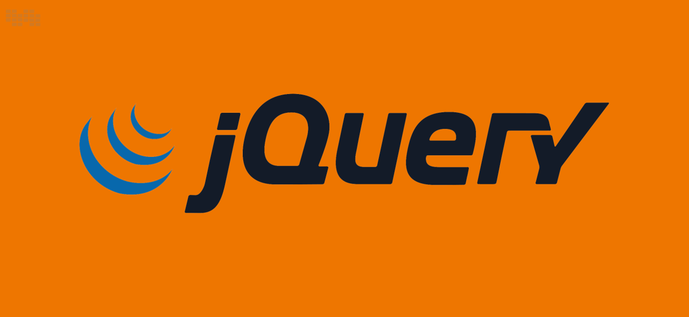

Тема 3. Введення у бібліотекy jQuery
У цій темі ми будемо розглядати:
-
Загальна характеристика бібліотеки jQuery
-
Підключення та активація бібліотеки
-
Синтаксис jQuery. Селектори. Обробка подій
-
Функції та властивості подій. Спеціальні ефекти
Загальні відомості про бібліотеку jQuery
Загальна характеристика бібліотеки jQuery
Історія виникнення бібліотеки jQuery є цікавою та важливою для розуміння контексту розвитку веброзробки.

Бібліотека jQuery була розроблена Джоном Резігом у 2006 році. На той час веброзробка потребувала великих зусиль для досягнення певних результатів через різницю у реалізації функціоналу у різних браузерах.
Головною мотивацією Джона Резіга створити jQuery було прагнення спростити та стандартизувати способи взаємодії з DOM, подіями та анімацією в різних браузерах. Він прагнув створити інструмент, який би був простим у використанні та полегшив роботу розробників.
Перша версія jQuery була випущена у січні 2006 року, і вона
миттєво здобула популярність серед веброзробників через свою
ефективність та простоту використання. З тих пір вона стала
стандартом в індустрії веброзробки.
Протягом наступних років jQuery активно розвивалася. Випускалися
нові версії, у яких додавалися нові функції та виправлялися
помилки. Також розробники створили велику кількість плагінів для
jQuery, які розширювали її можливості.
Сьогодні jQuery залишається одним із найпопулярніших інструментів для роботи з JavaScript. Вона використовується мільйонами вебсайтів по всьому світу, хоча з'явилися і альтернативні технології, такі як фреймворки JavaScript (наприклад, React, Angular, Vue.js), які надають інші підходи до розв'язання тих самих завдань.
Останньою версією бібліотеки є версія 3.7.1, яка була випущена 28 серпня 2023 року.

Дана бібліотека - це потужний і популярний інструмент у світі веброзробки, призначений для спрощення і зручності роботи з JavaScript на стороні клієнта. Одним із головних принципів jQuery є забезпечення швидкості та легкості використання, що дозволяє розробникам швидше реалізовувати різноманітні функціональність та взаємодію з DOM, подіями та анімацією на вебсторінках.
Однією з ключових особливостей jQuery є його крос-браузерна сумісність, що означає, що функції, які викликаються в jQuery, будуть працювати однаково на різних вебпереглядачах, незалежно від їх версій. Це значно спрощує процес розробки, оскільки розробникам не потрібно створювати власні рішення для кожного браузера окремо.
jQuery також відомий своєю простотою використання. Завдяки своїй зрозумілій синтаксичній структурі та коротким методам, використання jQuery значно скорочує кількість коду, необхідного для досягнення певного результату. Це особливо корисно для початківців, які тільки починають вивчати веброзробку.
Крім того, jQuery надає потужні можливості для маніпулювання DOM, анімації елементів, обробки подій, виконання AJAX-запитів та багато іншого. Велика кількість доступних плагінів розширює можливості бібліотеки, дозволяючи розробникам легко додавати новий функціонал до своїх проектів без необхідності власноручного написання складного коду.
У цілому, jQuery є надійним інструментом для швидкої та ефективної веброзробки, особливо для тих, хто тільки починає свій шлях у цій сфері, завдяки своїй простоті використання та широкому спектру функціональності.
Підключення та активація бібліотеки
Підключення jQuery до вебсторінки можна здійснити кількома способами.Розглянемо їх всі:
-
Підключення через CDN:
Використання CDN зазвичай є найпростішим і швидшим способом підключення jQuery. Вставте цей код всередині секції <head> вашого HTML-документа:<script src="https://ajax.googleapis.com/ajax/libs/jquery/3.6.0/jquery.min.js"></script>
-
Локальне підключення:
Якщо ви вирішили завантажити файл jQuery та підключити його локально, перш за все, завантажте файл jQuery з офіційного вебсайту. Після завантаження скопіюйте файл jQuery (наприклад, jquery.min.js) у ваш проект. Потім вставте такий код всередині секції <head> вашого HTML-документа:<script src="шлях_до_файлу/jquery.min.js"></script>
-
Встановіть jQuery за допомогою npm:
Якщо ви працюєте з npm (Node Package Manager), ви можете встановити jQuery через npm та використовувати його в своєму проєкті.Відкрийте термінал (або командний рядок) та введіть наступну команду для встановлення jQuery:
npm install jquery
Після встановлення ви можете використовувати jQuery у вашому JavaScript-коді. В імпортному файлі JavaScript ви можете використовувати jQuery таким чином:
import $ from 'jquery';
$(document).ready(function()
{ // ваш код jQuery тут });
Після виконання будь-якого з цих методів для підключення, jQuery буде успішно підключена до вашої вебсторінки і готова до використання.
Основи синтаксису jQuery
Синтаксис jQuery. Селектори
-
Вибір елементу за ідентифікатором:
Для вибору елемента за його ідентифікатором використовуйте символ # перед ідентифікатором елемента:$('#myElement');
-
Вибір елементів за класом:
Для вибору елементів за їх класом використовуйте символ . перед назвою класу:$('.myClass');
-
Вибір елементів за тегом:
Для вибору елементів за їх тегом просто вкажіть назву тегу:$('div');
-
Вибір елементів за батьківським елементом:
Ви можете вибрати всіх дітей певного батьківського елемента:$('#parentElement').find('div');
-
Вибір першого або останнього елемента:
Використовуйте :first або :last для вибору першого або останнього елемента:$('div:first');
-
Фільтрація елементів за певними умовами:
Використовуйте фільтри для вибору елементів за певними умовами, наприклад, за позицією у колекції або за зовнішнім виглядом:$('div').eq(3); // Вибір четвертого div
$('div').filter('.highlight'); // Вибір всіх div з класом 'highlight'
Синтаксис jQuery. Обробка подій
Обробка подій є одним з основних аспектів роботи з jQuery. Вона дозволяє вам реагувати на дії користувачів, такі як кліки, наведення курсору миші, натискання клавіш та багато інших. Ось декілька прикладів того, як ви можете обробляти події за допомогою jQuery:
-
Клік на елементі:
Обробка кліку на елементі може виглядати так:$('#myButton').click(function() {
// Ваш код обробки події тут
});
-
Подія наведення курсору на елемент:
Якщо ви хочете виконати дії, коли користувач наводить курсор миші на елемент, використовуйте метод hover:$('#myElement').hover(
function() {
// Виконати дії при наведенні курсору
},
function() {
// Виконати дії при знятті курсору
}
);
-
Обробка вводу тексту в полі введення:
Якщо ви хочете виконати дії під час введення тексту в поле введення, використовуйте методи keyup або change:$('#myInput').keyup(function() {
// Виконати дії при введенні тексту
});
-
Відправлення форми:
Для обробки відправлення форми використовуйте метод submit:$('#myForm').submit(function(event) {
// Виконати дії перед відправленням форми
// Перешкоджаємо стандартному відправленню форми
event.preventDefault();
});

Це лише декілька прикладів того, як ви можете обробляти події за допомогою jQuery. Ці методи дозволяють вам легко взаємодіяти з користувачем та реалізовувати різноманітні функціональність на вебсторінці.
Події: Функції, Властивості, та Ефекти
Функції та властивості подій
У jQuery події представлені функціями та властивостями, які можна використовувати для обробки різноманітних дій користувача на вебсторінці. Ось декілька основних функцій та властивостей подій:
-
.click(): Ця функція встановлює обробник подій для події "click" на вибраних елементах. Приклад:
$('button').click(function() {
alert('Клікнули на кнопці!');
});
-
.dblclick(): Ця функція встановлює обробник подій для події "double click" на вибраних елементах. Приклад:
$('button').dblclick(function() {
alert('Подвійний клік на кнопці!');
});
-
.hover(): Ця функція встановлює обробники подій для подій "mouseenter" та "mouseleave" на вибраних елементах. Приклад:
$('button').hover(
function() {
alert('Мишка ввійшла на кнопку!');
},
function() {
alert('Мишка вийшла з кнопки!');
}
);
-
.focus() та .blur(): Ці функції встановлюють обробники подій для подій "focus" та "blur" на вибраних елементах. Приклад:
$('input').focus(function() {
alert('Введення фокуса на поле вводу!');
});
$('input').blur(function() {
alert('Поле вводу втратило фокус!');
});
Функція on() в jQuery є дуже потужним інструментом
для обробки подій, і вона рекомендується використовувати тоді,
коли вам потрібно працювати з декількома подіями або коли елементи
додаються динамічно. Ось деякі ситуації, коли ви можете
використовувати функцію on():
-
Обробка декількох подій:
Якщо вам потрібно встановити обробники для кількох подій одночасно, ви можете використатиon(). Наприклад:$('button').on({
click: function() {
alert('Клікнули на кнопці!');
},
mouseenter: function() {
$(this).addClass('hovered');
},
mouseleave: function() {
$(this).removeClass('hovered');
}
});
-
Динамічно додані елементи:
Якщо ви додаєте елементи на сторінку динамічно через JavaScript або AJAX, використанняon()дозволяє вам легко прикріплювати обробники подій до цих елементів. Наприклад:$(document).on('click', 'button.dynamic', function() {
alert('Клікнули на динамічну кнопку!');
});
-
Делегування подій:
Функціяon()також дозволяє вам делегувати обробку подій вище по DOM-дереву. Це дозволяє оптимізувати роботу з подіями для великих наборів елементів. Наприклад:$('#parentElement').on('click', 'button', function() {
alert('Клікнули на кнопці, яка знаходиться всередині #parentElement!');
});
Узагальнюючи, функція on() є корисною тоді, коли вам
потрібно працювати з багатьма подіями, коли елементи додаються
динамічно або коли вам потрібно делегувати обробку подій.
Спеціальні ефекти
В jQuery існує багато вбудованих функцій для створення анімацій та спецефектів, що дозволяють створювати візуальні ефекти на вебсторінці. Ось декілька з них:
-
Анімація елементів:
Використовуйте методи.animate()для створення анімаційних ефектів, таких як переміщення, зміна розміру, зміна прозорості тощо. Наприклад:$('#myElement').animate({
left: '250px',
opacity: '0.5',
height: '150px',
width: '150px'
}, 1000);
Цей код анімує елемент #myElement, зсуваючи його вправо на 250px, змінюючи прозорість на 0.5, а також змінюючи його розмір на 150px x 150px протягом 1 секунди (1000 мс).
-
Показ та приховування:
Методи.show(),.hide()та.toggle()дозволяють показувати, приховувати або перемикати видимість елементів з плавними анімаційними ефектами:$('#myElement').hide(1000); // Приховати з анімацією протягом 1 секунди
-
Зміна прозорості:
Використовуйте методи.fadeIn(),.fadeOut()та.fadeToggle()для створення ефектів зміни прозорості елементів:$('#myElement').fadeIn(1000); // З'явлення з анімацією протягом 1 секунди
-
Підсвічування:
Методи.slideDown(),.slideUp()та.slideToggle()дозволяють створювати ефекти згортання або розгортання елементів з анімаційним ефектом:$('#myElement').slideDown(1000); // Розгортання з анімацією протягом 1 секунди
Анімація колірних властивостей:
Для анімації зміни кольору використовуйте плагін jQuery Color або
вбудовану підтримку кольорів у методі .animate().
Ефект елементу easing використовується для створення більш плавних та природних анімаційних переходів між станами. Він дозволяє задавати анімаційні криві, які контролюють швидкість зміни значень властивостей елементів під час анімації.
У jQuery easing може бути визначений як параметр методу .animate(). Ось приклад ефекту easing:
linear: Лінійний ефект, рухається з однаковою швидкістю:
$('#myElement').animate({
left: '250px'
}, 1000, 'linear');
Ось посилання на шпаргалку з великою кількістю перетікань: ТИЦЬ